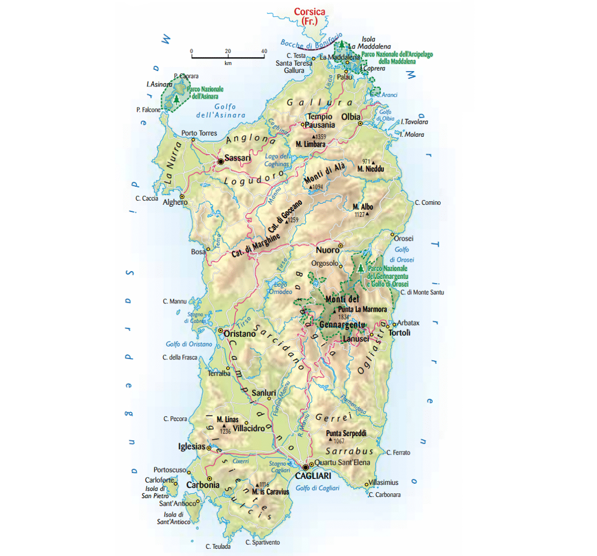
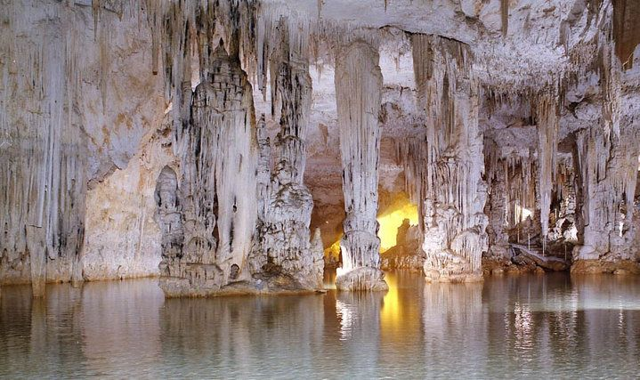

| Nome |
Sardegna |
| Capoluogo |
Cagliari (CA) |
| Data di Istituzione |
1948 |
| Altitudine media |
384 m.s.l.m |
| Superficie |
24100 km^2 |
| Abitanti (luglio 2023) |
1.569.002 |
| Densità |
65 ab/km^2 |
| Comuni |
377 |
| Province |
Nuoro (NU), Oristano (OR), Sassari (SS), Sud Sardegna (SU) |
| Confini |
Mar Mediterraneo |
| Patrono |
Madonna di Bonaria, S.Agostino |
| PIL procapite (2017) |
20.600€ |
Posto da visitare assolutamente: Grotte di Nettuno - Alghero (SS)
Le Grotte di Nettuno (Grotte di Nettuno) sono una formazione di grotte carsiche
situate lungo la costa nord-occidentale della Sardegna, in Italia.
Queste grotte sono una delle attrazioni naturali più spettacolari dell'isola
e sono raggiungibili sia via mare che via terra.
Ecco alcuni dettagli sulle Grotte di Nettuno:
Posizione:
Le Grotte di Nettuno si trovano nei pressi del promontorio di Capo Caccia,
vicino alla città di Alghero, nella provincia di Sassari, Sardegna.
La costa circostante è caratterizzata da falesie calcaree e un mare cristallino.
Formazione geologica:
Le grotte sono il risultato di fenomeni carsici,
un processo di erosione causato dalla dissoluzione di rocce solubili
come il calcare da parte dell'acqua.
Nel corso di migliaia di anni, l'acqua ha scavato gallerie,
sale e stalattiti all'interno della roccia calcarea,
creando un labirinto sotterraneo di impressionante bellezza.
Accesso via mare:
Una delle modalità più comuni per visitare le Grotte di Nettuno
è attraverso una gita in barca.
Ci sono imbarcazioni turistiche che partono da Alghero e
navigano lungo la costa fino alle grotte,
permettendo ai visitatori di ammirare gli spettacolari giochi di luce e
le formazioni rocciose dal mare.
Accesso via terra:
Le grotte sono anche accessibili via terra attraverso una scalinata a
gradini scavata nella roccia chiamata "Escala del Cabirol".
Questa scala scende dalla cima delle falesie fino all'entrata delle grotte.
La vista panoramica durante la discesa è spettacolare.
Sale e formazioni:
Le Grotte di Nettuno sono costellate di sale e formazioni calcaree straordinarie.
Si possono ammirare stalattiti e stalagmiti di varie forme e dimensioni,
creando un ambiente sotterraneo suggestivo e affascinante.
Lago Lamarmora:
All'interno delle grotte, si trova un lago sotterraneo chiamato
"Lago Lamarmora". Questo lago, che si estende per diversi metri,
contribuisce ulteriormente alla bellezza delle grotte.
Storia e leggende:
Le Grotte di Nettuno prendono il nome dal dio del mare nella mitologia romana,
Nettuno. La leggenda narra che le grotte siano la dimora di Nettuno.
La storia e le leggende contribuiscono ad aggiungere un fascino mistico al luogo.
Le Grotte di Nettuno sono dunque un'affascinante attrazione naturale che offre
una meravigliosa esperienza sia per chi decide di esplorarle via mare che via
terra. La bellezza e la maestosità delle formazioni calcaree rendono
questo luogo una tappa imperdibile per chi visita la Sardegna.
